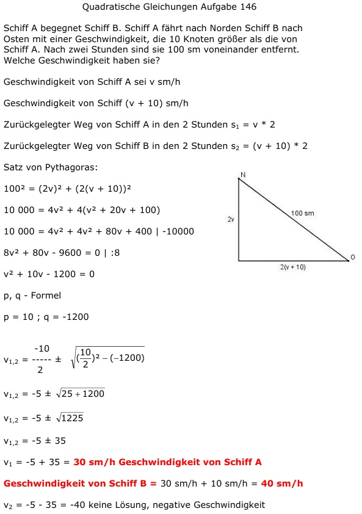

Aufgabe 146
Schiff A begegnet Schiff B. Schiff A fährt nach
Norden Schiff B nach Osten mit einer
Geschwindigkeit, die 10 Knoten größer als die von
Schiff A. Nach zwei Stunden sind sie 100 sm
voneinander entfernt.
Welche Geschwindigkeit haben sie?
Geschwindigkeit von Schiff A sei v sm/h
Geschwindigkeit von Schiff (v + 10) sm/h
Zurückgelegter Weg von Schiff A in den 2 Stunden
s1 = v * 2
Zurückgelegter Weg von Schiff B in den 2 Stunden
s2 = (v + 10) * 2

Satz von Pythagoras:
100² = (2v)² + (2(v + 10))²
10 000 = 4v² + 4(v² + 20v + 100)
10 000 = 4v² + 4v² + 80v + 400 |-10000
8v² + 80v - 9600 = 0 | :8
v² + 10v - 1200 = 0
p, q - Formel
p = 10 ; q = -1200
 v1,2 = -5 ± 35
v1 = -5 + 35 = 30 sm/h
Geschwindigkeit von Schiff A
Geschwindigkeit von Schiff B
= 30 sm/h + 10 sm/h = 40 sm/h
v2 = -5 - 35 = -40
keine Lösung, negative Geschwindigkeit
v1,2 = -5 ± 35
v1 = -5 + 35 = 30 sm/h
Geschwindigkeit von Schiff A
Geschwindigkeit von Schiff B
= 30 sm/h + 10 sm/h = 40 sm/h
v2 = -5 - 35 = -40
keine Lösung, negative Geschwindigkeit